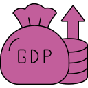

The Money QuestionMore money does not mean a more meaningful life
People across all income levels rate their days almost the same on meaning and happiness.
How meaningful does each income group feel?
We split people into 4 income groups. The scores are nearly identical.
Meaning scoreHow meaningful people feel their daily activities are, on a scale of 0 to 10
barely changes across income.
What about the difference between meaning and happiness?
Meaning and happiness are not the same thing. Childcare feels deeply meaningful (+0.90 gap) but is often stressful. Watching TV feels pleasant but scores low on meaning (-1.80 gap). This matters: if we only measure happiness, we miss what gives life purpose.